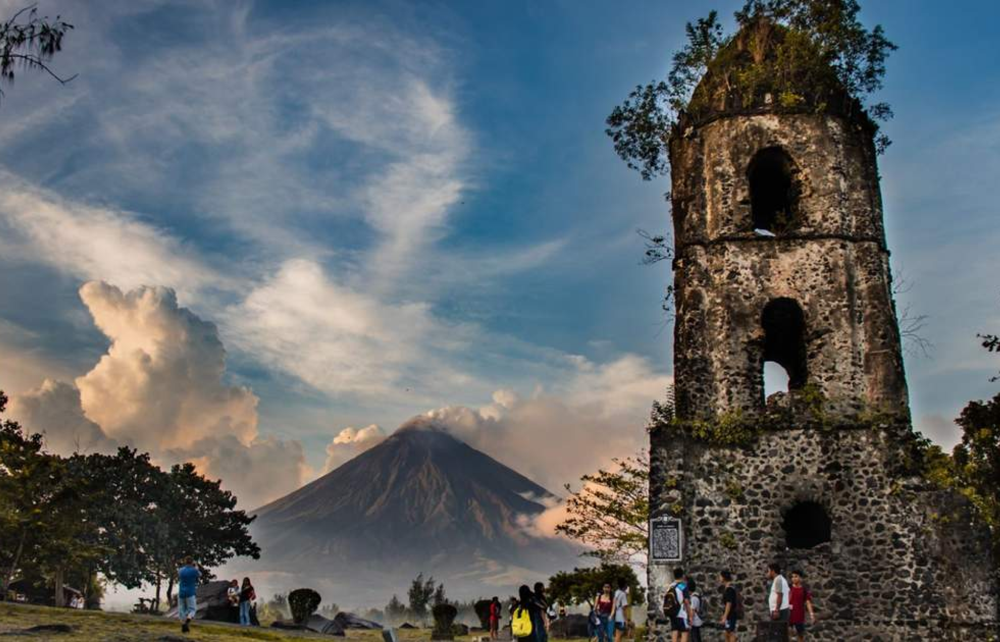
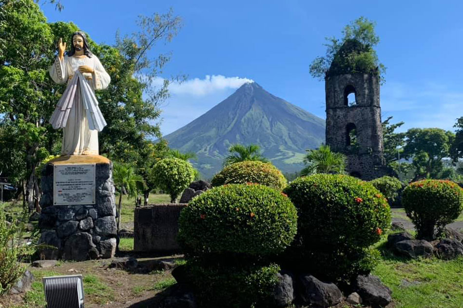
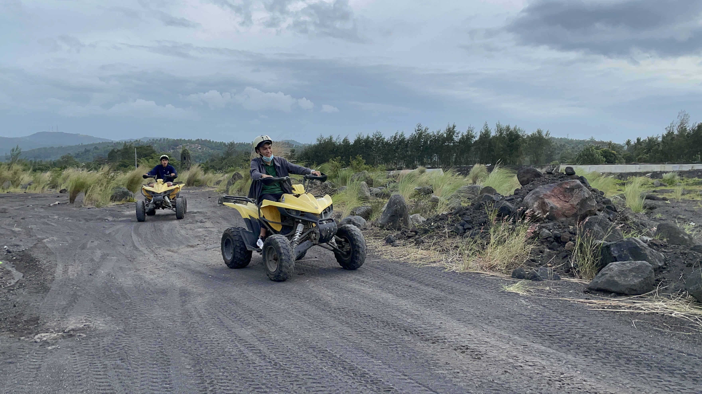

Cagsawa Ruins
Barangay Busay, Daraga, Albay
The Cagsawa Ruins in the Philippines are a somber reminder of the turbulent past of the area, located against the majestic backdrop of the Mayon Volcano. This historical location, which is situated in Daraga, Albay, provides guests with a singular chance to travel back in time and discover the secrets of a bygone age.
The Cagsawa Ruins date from the 18th
Century, when the town of Cagsawa was
destroyed by Mount Mayon's eruption in 1814.
Only the Cagsawa Church bell tower remains
visible today after the town was completely
covered in volcanic ash by the eruption. This
eerily lovely reminder of the past acts as a
powerful warning of the catastrophic power that
nature is capable of.

Photo | Jose Carretero, ABS-CBN News

Visitors Experience and Activities:
The massive Mayon Volcano offers an
amazing backdrop as you approach the
location, preparing you for an incredibly
immersive experience. The peaceful
surroundings and well-kept gardens encourage
guests to take their time exploring the remains.
Informational plaques along the paved pathway
offer insights into the historical significance of
the place as it leads to the renowned bell tower.
Aside from the photo and sightseeing opportunities there
are also a number of activities you can take part in such as
Halo-Halo, Sili Ice Cream and fruit shakes.
As well as going on an ATV ride around the ruins.
Photo | mamasguidehome

Photo | mamasguidehome
Sophia Jessa Trinidad
They've got this chill park vibe around it – perfect for
some cool pics📸. I'm no history buff, but feeling the
ancient vibes here is pretty surreal. Plus, the locals
around are super friendly and ready to share some cool
stories.
In a nutshell, if you're into cool ruins, stunning views,
and a dash of history, Cagsawa Ruins is a must-stop.
Totally satisfied with the vibes! 🌋✨
1 day ago